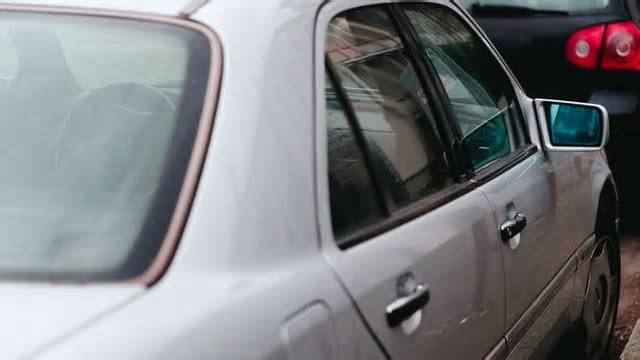

Baleares cambia las normas para circular entre sus islas: los residentes podrán desplazarse con sus vehículos sin estar sujetos a cupos desde 2027

La reforma establece un sistema de reciprocidad entre Mallorca, Menorca, Ibiza y Formentera, aunque mantiene la obligación de solicitar determinados permisos ...
La reforma establece un sistema de reciprocidad entre Mallorca, Menorca, Ibiza y Formentera, aunque mantiene la obligación de solicitar determinados permisos ...
Noticia publicada por La Razón on MSN. Consulta el artículo original en La Razón on MSN para más información.